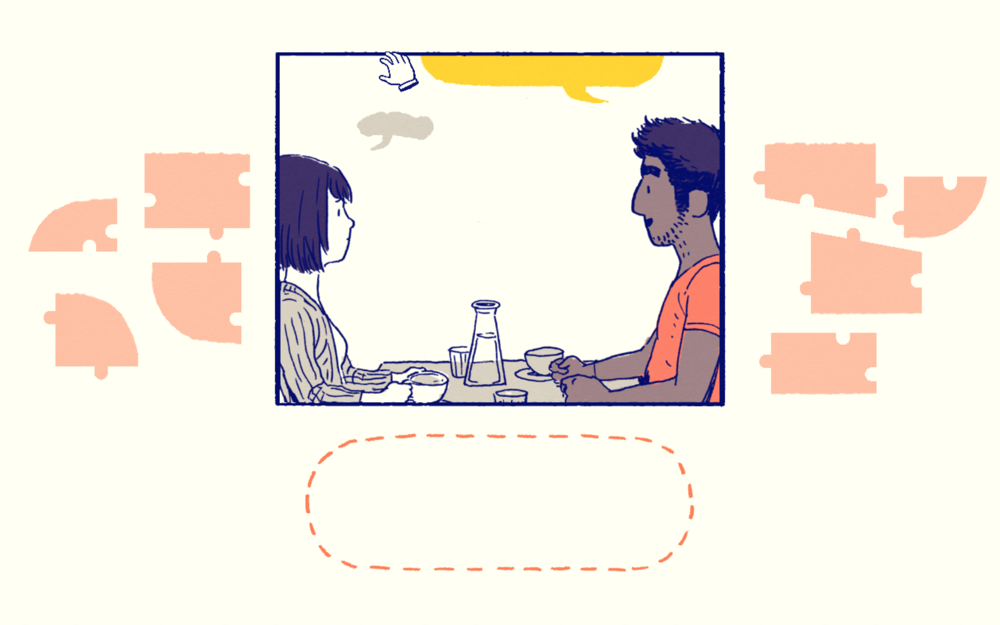
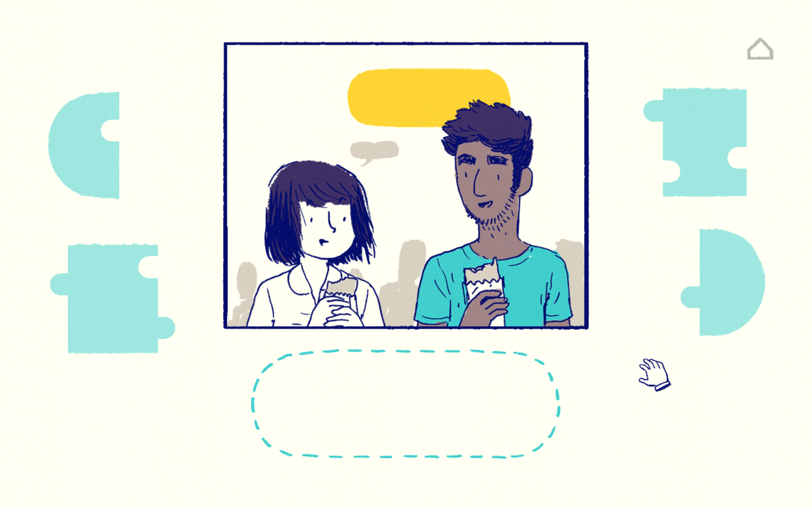
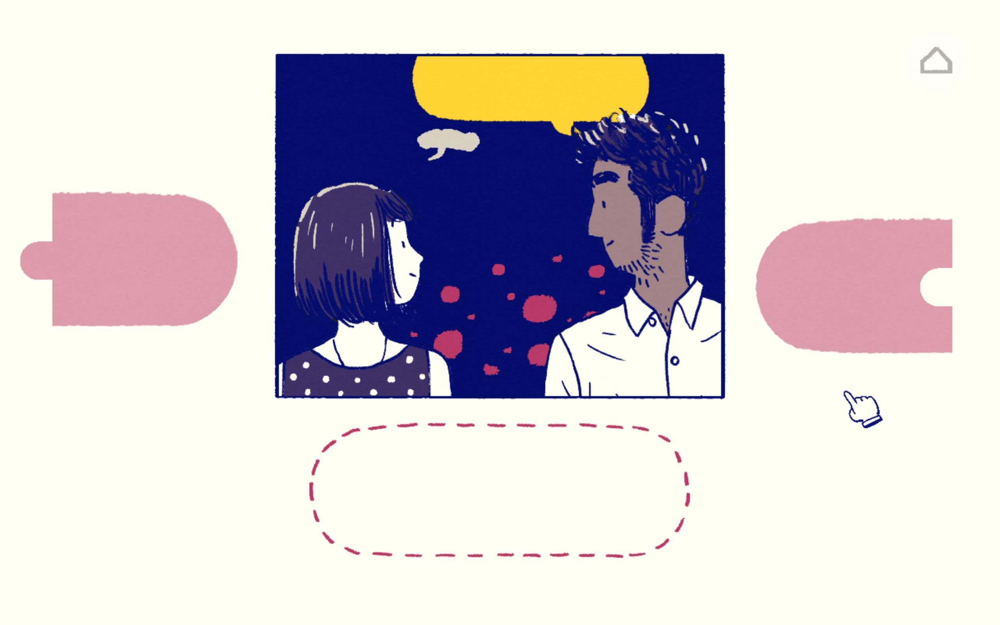

I’ve personally never been a huge fan of romance as a genre.
Get that cheesy shit away from me.
All love stories, love poems, love anything, fail to give me a sense of
bliss but instead trigger my gag reflex. When I saw Florence was about a
~~~journey through young and new love~~~~
I was really going out on a limb. Long story short I finished the game in
an hour and cried several times throughout the whole experience not because
the story was so touching, beautiful, and profound, but because the user experience
(UX) was designed perfectly.
Florence is an interactive story of her journey before, during, and after love. From waking up alone to waking up alone, players get a front row seat to her transformation as an individual.
The love story itself is very mundane and ordinary in nature. Girl meets boy, girl
and boy make each other happy, girl and boy get stuck in a loop, girl and boy fight,
girl and boy break up, and one if not both of them find some fresh start that was
somehow inspired by or started by their now past lover.
Wow. Riveting. Yes of course
it’s sweet (kind of) to watch two individuals fall in love for the first time.
Players get an inside look from milestones such as first dates, deep conversations,
and moving in together, to the smaller aspects of love such as eating pizza on the
couch, and waking up together, but this relationship story is overplayed,
overused, and highly saturated in media and storytelling to say the least.
What I fell in love with was not the story, but the beautifully crafted and thought out
interactions.
These are the three key ways Florence creates meaningful, impactful, and successful interactions.
(1) Emulation
(2) Pace
(3) Simplicity
The most perfectly crafted interaction in terms of emulation is dialogue. This specific interaction is triggered when Krrish and Florence had core conversational interactions. Players have to form Florence’s speech bubbles by piecing them together like a jigsaw puzzle. Depending on the context, the puzzle pieces of the dialogue bubble change forms. During their first date, it takes some time to piece the dialogue together, alluding to the feeling of “what do I say”, “how do I say this” that is present while getting to know someone and at the same time trying to please them. As they go on more dates and spend time together, the puzzle pieces become less and less complex and I find myself putting the pieces together easily and almost naturally.
  
This interaction perfectly emulates the flow of conversation and shifts in comfort throughout a relationship’s phases. The perfect emulation of the emotional aspect of different narrative plots makes the game’s interactions that much more impactful and important.
The importance of pace is extremely prevalent when it comes time for Florence to let go of Krrish.
Letting go of someone no matter what takes time and the process and timing is different for
everyone. The interaction itself is simple: you either hold on and Florence stops walking, or
you don’t hold and Florence continues to walk forward until Krrish fades out of frame. Players
are free to let go or to hold on as they wish, and the story, which has no time limit, is on
hold until players willingly let go and are ready to proceed. The only interaction that truly
suggests a pace is the argument. As the two of them argue and as his speech bubbles form faster
than yours, the balance shifts so that whoever forms their thoughts faster is looming over the
other, and that emulates the power dynamics of an argument perfectly. It might just be my
hyper-competitive nature, but the fight to get the upper hand creates a pace in which I want
to be fast and I want to get what I have to get out as fast as possible.
Every other interaction gives enough leeway that players can complete them at the pace
they wish.
The versatility of pace allows for every interaction to get them time it deserves.
All of these complex elements while diverse, rich, and unique, were at the same time simple. Each interaction consisted of one element ranging from puzzle pieces, moving a toothbrush up and down, to simply dragging items onto a pedestal. While profoundly impactful, the simplicity of the interactions allow players to make the connections between story and emulation with ease. Simplicity allows for digestibility which allows for deep and meaningful connections.
Through emulation, pace, and simplicity,Florence successfully relays the most generic, overused love story of youth. The role of impactful interactions is demonstrated to be essential. This game makes someone as callous as me feel empathetic and warm. Florence truly proves good interactions can make even the most generic of love stories feel unique and beautiful.